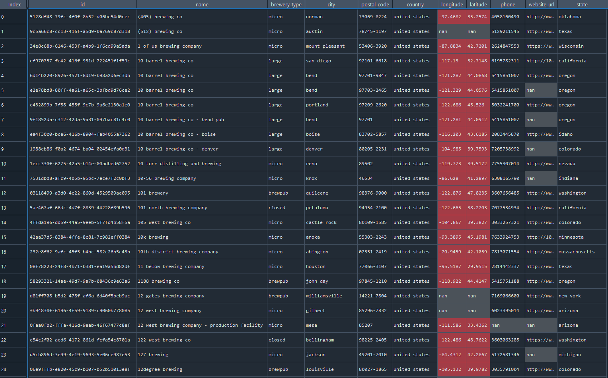
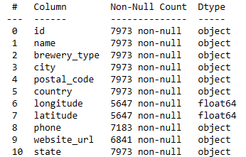
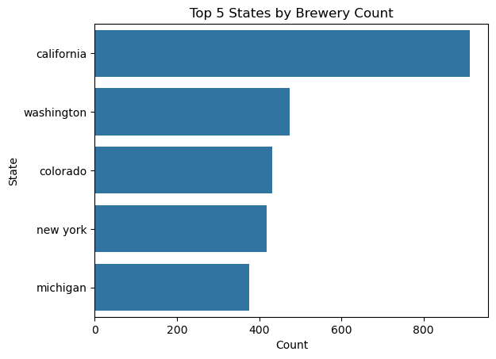
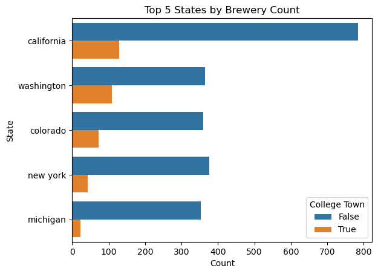
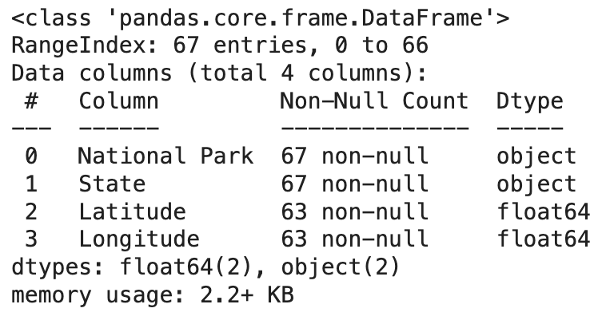

Code
import numpy as np
import pandas as pd
import plotly.express as px
breweries_by_state = pd.read_csv('data/brewery-count-by-state.csv')This page features our process for gathering, cleaning, and providing an initial exploratory analysis of the data used.
The driving dataset of our project, this was pulled via API from the Open Brewery DB website [1].
We first reviewed the countries available, and found cleaning and slicing on the country name column were warranted.
After applying a strip and lowercase on the country column, we filtered just for the United States, and then examined the null values.
There were quite a few missing rows in address_1 column, and even some incomplete addresses at that. With the completeness provided by city, state, and postal_code, we disregarded the other address columns, dropping all three.
Additionally, state is identical to state_province. We dropped state_province.
After removing nonessential rows and columns, we applied the strip and lowercase procedure on the remaining columns, and then reexamined the null values.
We decided to move forward with this data, and potentially massage any longitude/latitude data issues later. Even though there were quite a few missing values for longitude/latitude, keeping the columns could prove useful later. The phone and website_url columns will likely be irrelevant, and both have a high number of null values, but we retained them for the similar reason they may prove useful later.

Our initial observation of the data is that we are dealing almost primarily with categorical values.

The latitudes and longitudes are float numeric values, however, they’re more relevant from a geographical perspective than a numerical analysis perspective.
One method we could use to gather some numerical essence from the cleaned data is to analyze the categories (i.e. counts of breweries per state or per city, types of breweries per state or per city, etc.).
Let’s take a look at how numerous the overall categories are.
A useful starting point in the visualizations would be to break down the spread of brewery types and find the top-5 and bottom-5 for brewery counts by state, ultimately leading into some heat maps of these spreads.
The overwhelming amount of breweries are classified as micro breweries, and that the bottom 5 breweries have such small counts that they don’t even appear on the plot. Another important observation is that closed breweries are somewhat significant in that they appear as a bar on the plot. Closed could become a factor in later models, so we decided to leave these data points in.

From this initial glance, we can see what that the breweries per state varies wildly.
We can create an interactive map. Note that just the dataset of brewery counts by states will be uploaded to promote efficiency.
Import libraries:
import numpy as np
import pandas as pd
import plotly.express as px
breweries_by_state = pd.read_csv('data/brewery-count-by-state.csv')Interactive Plot:
# geographical representations
fig = px.choropleth(breweries_by_state,
locationmode = 'USA-states',
locations = 'State',
scope = 'usa',
color = 'Count',
color_continuous_scale = 'Viridis_r',
title = 'Breweries by State')
fig.show()The top 150 college towns in the United States were scraped from this article [2]. We plan on seeing if college towns are a driving factor of breweries. Note that these are popular college towns as defined by the article and the author.
The data was essentially complete due to the scraped data being contained in a table. However, a few tweaks were required. Namely, applying the lower case format and separating city and state. Additionally, after separating the city and state, we noticed the article used unconventional abbreviations for the states. Therefore, we applied a custom dictionary to show the states in full text.
Perhaps the most efficient method to illustrate the concentration of top college towns by state is through a geographical representation.
We can create an interactive map similar to the brewery map above.
Import libraries:
import numpy as np
import pandas as pd
import plotly.express as px
college_towns_by_state = pd.read_csv('data/college-town-count-by-state.csv')Interactive Plot
# geographical representations
fig = px.choropleth(college_towns_by_state,
locationmode = 'USA-states',
locations = 'State',
scope = 'usa',
color = 'Count',
color_continuous_scale = 'Viridis_r',
title = 'Top College Town Counts by State')
fig.show()There are definite similarities in the heat maps between brewery counts per state and college towns per state, let’s continue digging into this.
Are there a significant amount of breweries in college towns? In this next exploration, we’re looking directly at city to city matches, and not including surrounding areas. This could be something to return to given more geographical data.
We can create a new column in the dataframe scraped from the open-brewery-db with booleans on if the brewery lies in a college town. Out of all the breweries, 15.8% of the total breweries are located in a college town.
When we look at our Top and Bottom 5 States by Brewery Count, we can examine how many of these breweries are located in college towns.

An interesting distinction from above is that there are more total breweries and breweries in college towns in the top 5 states for breweries, however in at least one of the bottom 5 states by brewery counts, more than half of the breweries are contained within a college town.
The top 300 metropolitan cities were scraped from an article here [3] which provided the city, rank and the current 2024 population. If large populations promote breweries, this data set will be helpful to demonstrate this relationship (or lack thereof).
The data scraped from the website had a couple of areas to be cleaned and transformed. First, this data should be accompanied with an additional set of columns for full state names, region and division to which the city belongs. In order to complete this, the State column needed to be capitalized to allow the appropriate merge. Once the adjustments to the original state column the Regions data set was merged in. This produced two columns using the same State column name. Columns were renamed to differentiate state code from state name. Then, the web scraper pulled city population including these commas which are preventing this column from being recognized as numeric. The commas were removed from the 2024 Population column, then these values were converted to integers.

The Metropolitan Cities data set identifies the top 300 most populated cities in the United States. If breweries thrive in large cities, this will help us identify key examples. This is a pretty large data set though. Let’s explore more about these cities and perhaps find a cutoff to scope down the data set.
Basic measurements were taken from the 300 city populations. These were the key results:
This data is showing a clear skew. While there is only a difference of about 70,000 people between the lower 50% of metropolitan cities, the upper 50% of populations has a difference of 7.7 million people. This is a very noteworthy distribution. Let’s visualize this data to understand this pattern more fully across each region of the US.
Below is a Box and Whisker plot comparing the spread of city populations in each of the 4 US regions: South, Northeast, Midwest and West. In general, these regions are showing similar distribution patterns. Mainly, about 75% of major metropolitan cities in the US are less than approximately 400,000 people. There are a handful of outliers in the plot below that represent extremely large populations in comparison.
While visualizing the spread is helpful, it is challenging to see patterns related to how many metropolitan cities each region holds. For this, we can use donut charts. It is interesting to observe from the three charts provided that the proportion of metropolitan cities each region holds is relatively constant whether you look at the full 300 cities, only the top 50 or even the top 10.
The results above demonstrate that our data show consistent patterns and relatively comparable distributions at smaller scopes. To improve efficiency of our model, we may scope these cities down to the top 150 (upper 50%) of the metropolitan data set to avoid increasing the load and processing time of our models. In future work in this project, the location of metropolitan cities will be linked to the Brewery data set that has been developed above. WE know that most metropolitan cities occur in the West and the South. We’ll look for any correlation with the frequency of breweries as we get into the proceeding modeling work.
26 tech hubs were identified by this site [4] that assessed tech hubs and the living conditions in each location. For the purposes of this project, only the city names were scraped to use in review of their correlation with brewery hotspots. This data set will support the ability to compare the occurrence of breweries to the presence of tech hubs.
The data scraped from the website had several needed improvements. The data was formatted as [City],[State code] when initially pulled from the web source. For our purposes this column needed to be split into two columns at the comma. It was noted that Dallas and Fort Worth, Texas were combined into one entry and also did not include a state code. After data was split and the original column was removed. The Dallas-Ft.Worth entry was removed and separate Dallas and Fort Worth entries were appended to the data set. With properly formatted City and State columns, the Regions data set was merged in based on the state code.
The Tech Hubs data set identifies the 26 popular tech hubs across the United States. If breweries are more successful near places of technology and innovation, this will help us identify the correlation.
Let’s review the distribution of these tech hubs across the country then map them to see the distribution.
In exploring this data, we find the distribution of tech hubs by region as follows: South (9), West (7), Midwest (6), and Northeast (4). We can represent this with a donut chart.

Understanding the spread of distribution by region is helpful, but it is also telling to review tech hubs by state. Below we can identify that Texas, California and Ohio, are the only states to contain more than two tech hubs.
The summary above demonstrates some basic patterns in the Tech Hub data set. These patterns will be considered alongside the other features in our project to understand if Tech Hubs tend to have an increased/decreased number of breweries within the area. Further models will consider whether the breweries of the Brewery Database fall in or near the Tech Hubs that we have found.
A full list of currently operational US ski resorts was scraped from this source [5]. The source included the name of the ski resort, as well as the city and state the resort is located in. This data will help inform our question of whether brewery locations are correlated with outdoor recreational hotspots such as ski resorts
Pictured above is a snapshot of the initial dataset. The dataset requires a handful of manipulations to the city names in order to clean it up for analysis. As pictured above, some of the ski resorts are located near certain cities, and are designated as such (eg “near Wenatchee”). Obtaining the nearest city is suitable for our purposes, so the “near “ was removed. Next, some of the city names have additional information listed after them (eg “Stampede Pass (private)” to indicate this is a private resort). Any text found in brackets was removed. Finally, certain resorts such as The Summit at Snoqualmie have multiple cities listed. Only the first city was kept as this was suitable for our purposes.
Pictured below is a snippet of the cleaned dataset:
Utilizing the .info() function, we can see that our fields include Ski Resort, City, and State. All of the values are filled in for each field and we are dealing with exclusively object data types in this dataset.
We know that our top 5 states with the most breweries are California, Washington, Colorado, New York, and Michigan. The pie chart above shows the distribution of ski resorts by state as a percentage of the total. The cut off for being included in the “other” pie slice was 7 ski resorts. We can see that all of our top brewery states are listed in the pie chart as having their own slice. We also know that our bottom 5 states with the least breweries are Delaware, North Dakota, Hawaii, Mississippi, and District of Columbia. Interestingly, none of those states have their own slice in the chart above.
Next, we took a look at just the top 5 states with the most ski resorts, as pictured in the bar chart above. Notably, we find 3 out of 5 of our top brewery states also being listed in the top 5 ski resort states (New York, Michigan, and California). This indicates that there may be some association between the incidence of ski resorts and breweries.
A full list of national parks in the US was scraped from this source [6]. The source included the name of the national park and the state it is located in. Both data points were captured by the scraper. This data will help inform our question of whether brewery locations are correlated with outdoor recreational hotspots such as national parks
Pictured above is a snippet of the initial dataset. There is not much cleaning necessary as the data is pretty straightforward and the source does not include any additional information/text. However we did utilize a geolocator package to add the latitude and longitude to each national park as this may be useful for future modeling.
Pictured below is a snippet of the cleaned dataset with the latitude and longitude added in. Notably, there are a handful of null values that the geolocator could not fill in. We have decided to leave those values as is while we determine whether we will be using the coordinates.

Utilizing the .info() function, we can see that our fields include National Park, State, Latitude, and Longitude. National Park and State values are objects and all values are filled in. Latitude and Longitude values are float and we do have a handful of NaN values there. As mentioned, we are going to leave those for now while we determine whether we will be utilizing the coordinates.
We know that our top 5 states with the most breweries are California, Washington, Colorado, New York, and Michigan. The pie chart above shows the distribution of national parks by state as a percentage of the total. The cut off for being included in the “other” pie slice was less than 2 national parks. We can see that 3 out of 5 of our top brewery states (California, Colorado, and Washington) are listed in the pie chart as having their own slice. We also know that our bottom 5 states with the least breweries are Delaware, North Dakota, Hawaii, Mississippi, and District of Columbia. We see that Hawaii is the only bottom 5 state to have its own pie slice.
Next, we took a look at just the top 5 states with the most ski resorts, as pictured in the bar chart above. Notably, we find 2 out of 5 of our top brewery states also being listed in the top 5 ski resort states (California and Colorado). This indicates that there may be some association between the incidence of national parks and breweries. However, we found less of our top 5 brewery states in the top 5 of national parks compared to the top 5 of ski resorts.